Scene 04

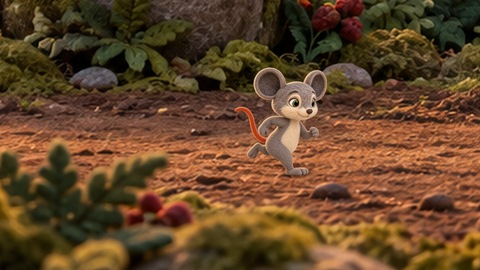

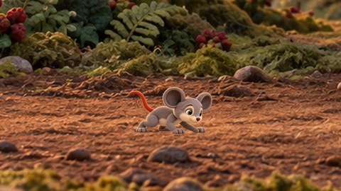


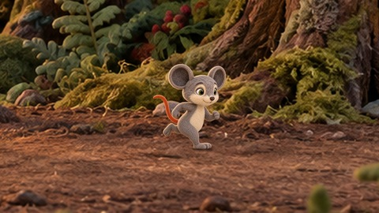

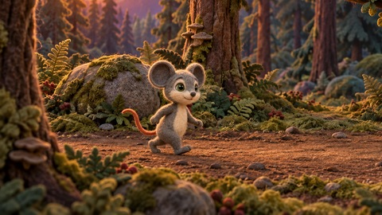

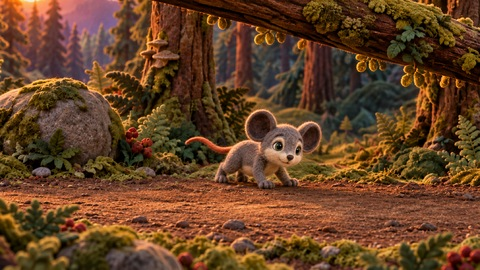

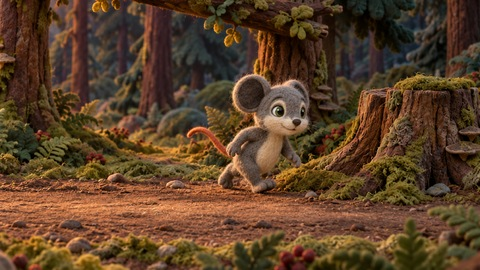
Effective candidate sequence, including neighboring retained images. Every preview is 480×270; click for native size. Compare shared views with shared views and portraits with portraits. Scene15 keeps Milo left / Leo right; s12_p04 remains the explicit distant-wide exception.
Before/after review · Size and axis checks






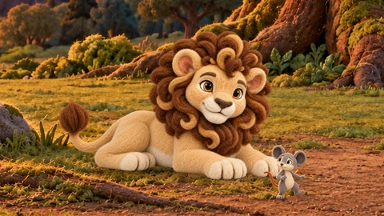


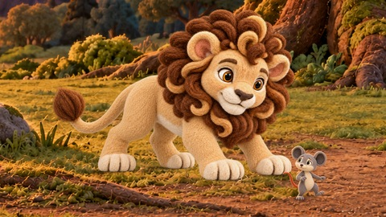
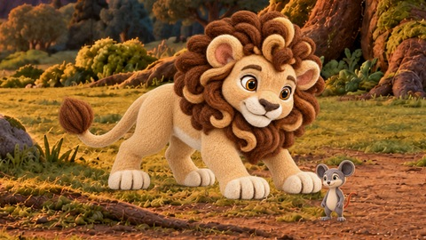

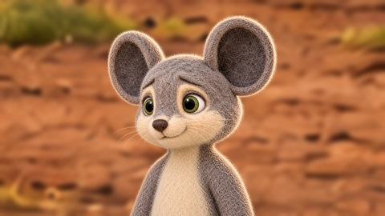
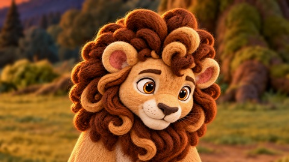
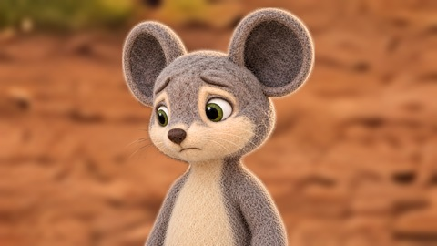

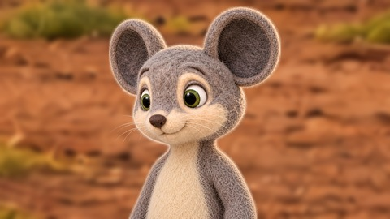


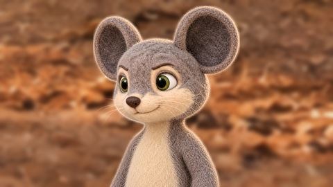
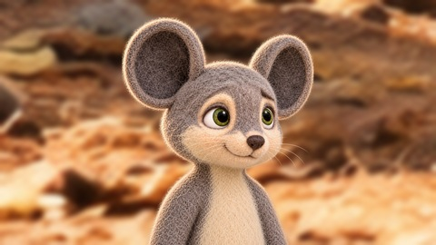

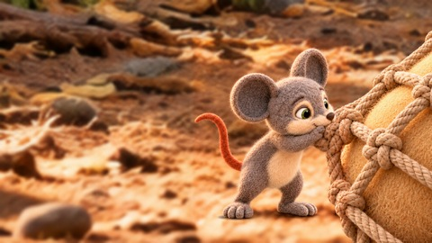

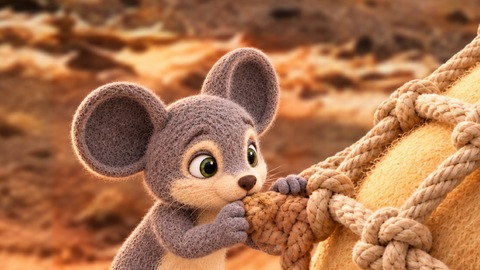


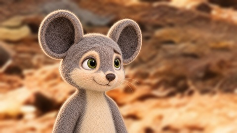


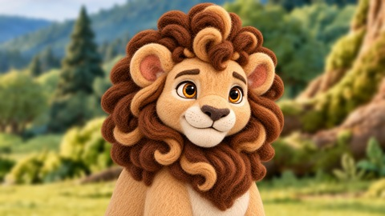
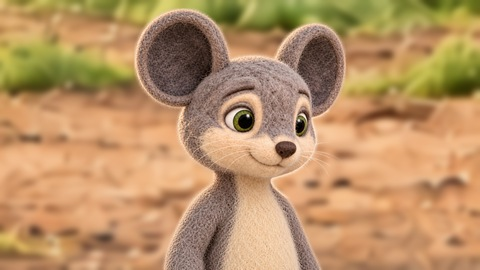
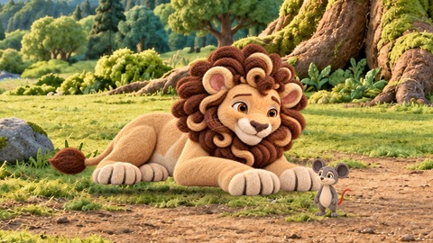


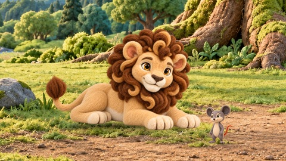